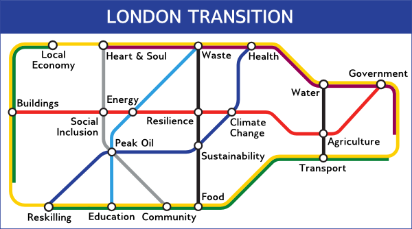

|  |
August NewsletterEVENTS / WORKSHOPS / COURSES EXHIBITIONSTo receive future newsletters via email enter your email address below and click on Subscribe. EVENTSJulySat 24: Nature Awareness WalkNature-awareness walk in the Meadow led by Mary Hogan.151 Park Road, City/Town: Crouch End, N8 8JL, 3pm-4pm Sun 25: Sustainable Haringey Summer GatheringPromoting and celebrating sustainable food policies, practices and projects in HaringeyRailway Fields Nature Reserve, Green Lanes, N4 Mon 26: Friends of Loughborough Park Nature WalkDr Iain Bolton of Lambeth Council leads a nature walk through a secret haven for plants and animals in the heart of BrixtonLoughborough Park, Coldharbour Lane, Brixton, 6pm-8pm Tue 27: Capital Growth Summer Networking EventEvent focuing on Engaging the Local Community, including using social media, successful events and hard to reach groupsGolden Lane Estate Community Hall, Golden Lane Estate, EC1Y 0TN, 6pm-9pm Fri 30: Meadow Orchard Lammas GatheringFestival at Meadow Orchard Project151 Park Road, City/Town: Crouch End, N8 8JL, 6pm-11:45pm AugustWed 11: Why we should end domestic flights public meetingWater: aquatic ecosystems, pollution and human usage1pm- 6.30pm Free entry, open to all Arcola Theatre, E7 2DJ, 1pm-6:30pm How we can fight the expansion of aviation and hear the case for ending domestic flights Fri 13: Urban Harvest meetingPlanning foraging and harvesting of neglected fruit treesJai Shri Krisna Resturant, 10 Turnpike Ln, Haringey, N8 0PT, 6:30pm-8pm Sun 22: London Permaculture FestivalFestival to bring together all groups directly or indirectly related to Permaculture and Transition in and around LondonCecil Sharp House, 2 Regents Park Road, Camden, NW1 7AY, 11am-11pm WORKSHOPSJulyMon 19 - Sat 31: Brixton Skill ShareWorkshop space for teaching and learning practical and creative skills.4th Avenue, Granville Arcade, Brixton Village, Coldharbour Lane, SW9 8JX Fri 23: Social Startup Labs comes to BrixtonPractical workshop for people who want to make a lasting social impact in their communitiesUnit 67-68, 4th Avenue, Brixton Village Market, Brixton, SW9 8JX Sat 24: RBS Teach in and Affinity Group TrainingParticipatory workshop exploring financial and environmental crises and action group trainingSchool of Oriental and African Studies, Russel Square, WC1H 0XG, 1pm-17:30pm Sat 31: An introduction to using story-based strategyHow to win 'the battle of the story' in campaigning, movement organizing and changing the worldStephen Lawrence Centre, 39 Brookmill Road, London, SE8 4HU, 3pm-6pm Sat 31: Practical loft insulation talkPractical talk about loft insulation by Jack Kelly and Clyde WatsonAugustFri 6: Summer Tree IDTrees and woodland - Tree identificationDulwich Upper Wood, London Thu 12: Woodland food growing area workshopCreation of a woodland food growing area in Dulwich Upper Wood.Thu 19: Insulating Victorian buildings the Ar'Chic wayEnergy tour of Victorian house98 Bellenden Road, Peckham, SE15 4RF, 7.30pm Thu 19: Summer Tree ID walkFree native summer tree ID walk in Dulwich Upper WoodCOURSESJulyFri 23 - Sat 25: Rammed Earth ConstructionHackney City Farm, 1a Goldsmith's Row, 9:30am-5:30pm, £180Sat 24-Sun 25: Transition Training WeekendTraining course run by the Transition NetworkFri 23 - Sun 25: Preserving FoodHackney City Farm, 1a Goldsmith's Row, 10am-5pmFri 23 - Sat 24: Ecological Sustainability and Climate Change: Denial, Stories and VisionsDevelop personal strategies for dealing with denial responses and to learn how to avoid triggering themCentral London, contact sandra.white@makingessentialconnections.co.uk Sat 24: Building a pond / puddling clayHackney City Farm, 1a Goldsmith's Row, 10am-5pmWed 28: ISO 14001 Introduction and AwarenessOverview of the purpose and requirements of ISO 14001 as a tool for the management of environmental aspects and impactsTuition House, 27-37 St. George's Road, Wimbledon, SW19 4EU, 9:30am-12pm Fri 30 - Sun 1: Family BushcraftHackney City Farm, 1a Goldsmith's Row, 10am-5pmSat 31: Raw/ Living FoodHackney City Farm, 1a Goldsmith's Row, 10am-5pmAugustThu 5: Environmental Policy WorkshopWhat you need to do and how to go about getting the correct Environmental Policy for your organisationTuition House, 27-37 St. George's Road, Wimbledon, SW19 4EU, 9:30am-12pm Sat 7: Winter Growing/ Seed SavingThe Regent's Park Allotment, 10.30am-1pmWed 11: Winter Growing/ Seed SavingThe Regent's Park Allotment, 5.15pm-7.45pmTue 17: An Introduction to Pond Life and ManagementLavender Pond, Rotherhithe, LondonSat 21-Sun 22: Make your own natural soapLearn to make your own soapsHackney City Farm, 1a Goldsmith's Row, 10am-5pm Tue 24: Introduction to Wildflower IDStave Hill, Rotherhithe, LondonThu 26 - Fri 27: Woodland ManagementTrees and woodland - Ecology and managementDulwich, London EXHIBITIONSJulyWed 28 - Sat 31: Electric Vehicle ExhibitionExhibition of latest electric vehicles on from leading manufacturersKingston's Market Sqaure OngoingThe Ministry of FoodExhibition examining how the British public adapted to a world of food shortagesduring the second world warImperial War Museum London, Lambeth Road, London SE1 6HZ |